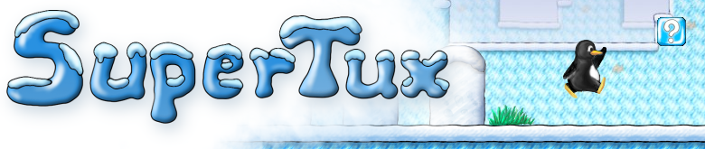

The modern version of SuperTux Origins with Web (WASM), Android, Windows, and R36S builds.
The original Milestone 1 era of SuperTux (around 0.1.x), ported to SDL2, preserved and packaged for modern platforms.